Plot the multitrait index based on factor analysis and ideotype-design proposed by Rocha et al. (2018).
# S3 method for fai_blup plot( x, ideotype = 1, SI = 15, radar = TRUE, arrange.label = FALSE, size.point = 2.5, size.line = 0.7, size.text = 10, col.sel = "red", col.nonsel = "black", ... )
| x | An object of class |
|---|---|
| ideotype | The ideotype to be plotted. Default is 1. |
| SI | An integer [0-100]. The selection intensity in percentage of the total number of genotypes. |
| radar | Logical argument. If true (default) a radar plot is generated
after using |
| arrange.label | Logical argument. If |
| size.point | The size of the point in graphic. Defaults to 2.5. |
| size.line | The size of the line in graphic. Defaults to 0.7. |
| size.text | The size for the text in the plot. Defaults to 10. |
| col.sel | The colour for selected genotypes. Defaults to |
| col.nonsel | The colour for nonselected genotypes. Defaults to |
| ... | Other arguments to be passed from ggplot2::theme(). |
An object of class gg, ggplot.
Rocha, J.R.A.S.C.R, J.C. Machado, and P.C.S. Carneiro. 2018. Multitrait index based on factor analysis and ideotype-design: proposal and application on elephant grass breeding for bioenergy. GCB Bioenergy 10:52-60. doi: doi:10.1111/gcbb.12443.
# \donttest{ library(metan) mod <- waasb(data_ge, env = ENV, gen = GEN, rep = REP, resp = c(GY, HM))#>#>#>#>#> --------------------------------------------------------------------------- #> P-values for Likelihood Ratio Test of the analyzed traits #> --------------------------------------------------------------------------- #> model GY HM #> COMPLETE NA NA #> GEN 1.11e-05 5.07e-03 #> GEN:ENV 2.15e-11 2.27e-15 #> --------------------------------------------------------------------------- #> All variables with significant (p < 0.05) genotype-vs-environment interaction#> #> ----------------------------------------------------------------------------------- #> Principal Component Analysis #> ----------------------------------------------------------------------------------- #> eigen.values cumulative.var #> PC1 1.1 55.23 #> PC2 0.9 100.00 #> #> ----------------------------------------------------------------------------------- #> Factor Analysis #> ----------------------------------------------------------------------------------- #> FA1 comunalits #> GY -0.74 0.55 #> HM 0.74 0.55 #> #> ----------------------------------------------------------------------------------- #> Comunalit Mean: 0.5523038 #> Selection differential #> ----------------------------------------------------------------------------------- #> VAR Factor Xo Xs SD SDperc sense #> 1 GY 1 2.674242 2.594199 -0.08004274 -2.9931005 none #> 2 HM 1 48.088286 48.005568 -0.08271774 -0.1720122 none #> #> ----------------------------------------------------------------------------------- #> Selected genotypes #> G4 G9 #> -----------------------------------------------------------------------------------plot(FAI)# }